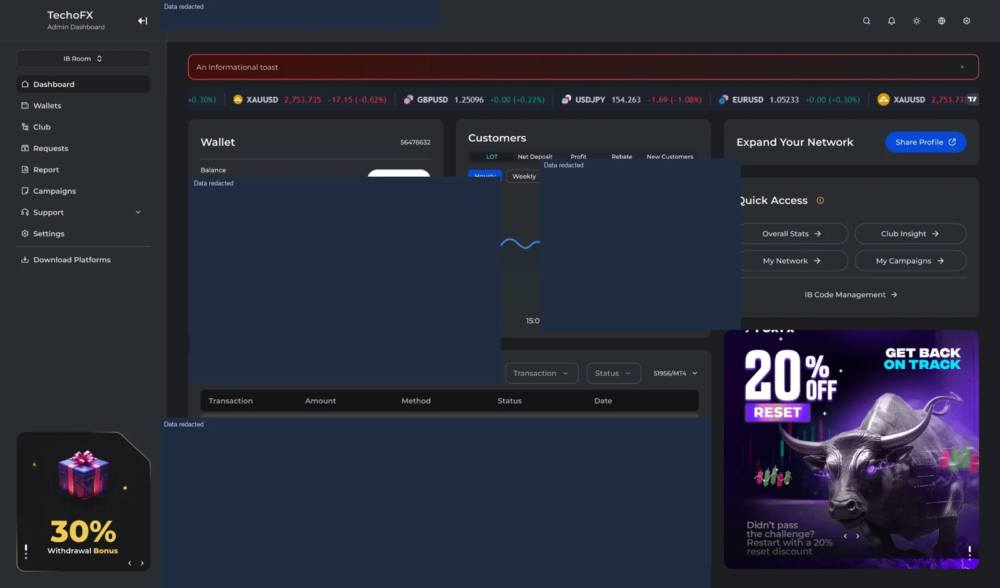
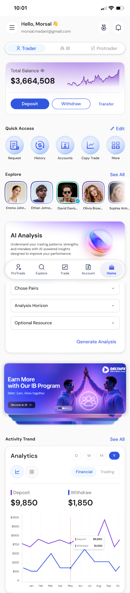
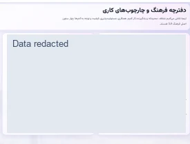
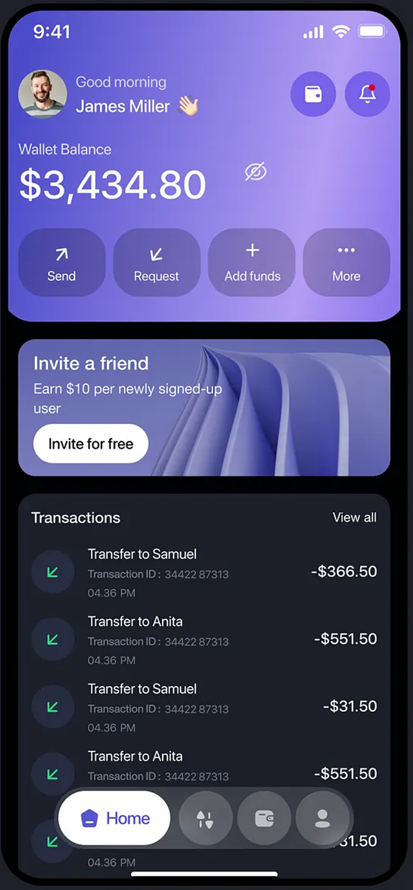
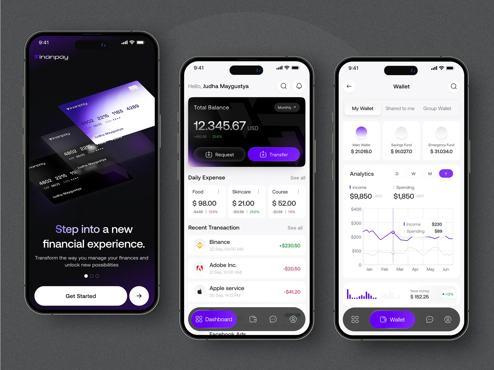

Product interface
Product interfaceFinTech
Brokerage CRM Ecosystem
Product Manager — Discovery, Redesign & Delivery
A replacement brokerage CRM delivered in under eight months with the existing engineering and QA teams.
View case studyComplete Portfolio
Product case studies and concise overviews across FinTech, enterprise software, AI, consumer applications and company websites.
20 product areas · case studies and overviews
Product interfaceProduct Manager — Discovery, Redesign & Delivery
A replacement brokerage CRM delivered in under eight months with the existing engineering and QA teams.
View case study Product interface
Product interfaceProduct Owner — End-to-End Product Ownership
End-to-end product ownership of a brokerage platform for exposure analysis, behavior monitoring and operational risk decisions.
View case study Product interface
Product interfaceProduct Strategy, Prioritization & Team Leadership
Customer engagement through behavioral segments, quests, levels and governed rewards.
View case study
Product interfaceProduct Roadmaps, Partner Workflows & Team Leadership
Partner networks, multi-level IB structures, commissions and performance analytics.
View case study Product interface
Product interfaceProduct Direction, Prioritization & Team Leadership
ProTrader discovery, transparent performance, subscriptions and follower risk controls.
View case study Product interface
Product interfaceProduct Leadership — AI-assisted Decision Support
AI-assisted chart analysis with symbol and timeframe context, keeping trading decisions with the user.
View case studyEnterprise
Product Management
Sales relationship management within TopFast’s enterprise product work.
View case studyFinTech
Product Strategy & Roadmap Prioritization
Trading-platform tools for brokerage execution rules and operational control.
View case study
Product interfaceHands-on Product Manager — Native Mobile CRM
Native brokerage workflows shaped through close product collaboration with a Flutter developer.
View case studyEnterprise
Product Roadmaps & Platform Strategy
Municipal smart-city services shaped around customer needs and platform priorities.
View case studyFinTech
Product & Development Initiatives
Smart feeder tooling within my financial-market product work.
View case studyFinTech
Product & Development Initiatives
Payment-related product and development work across financial-market platforms.
View case studyEnterprise
Contract Product Lead & Hands-on Builder
An independently designed and built HR PWA, with an MVP delivered and in use by the client HR team.
View case studyEnterprise
Product Owner — Enterprise Onboarding
Employee onboarding workflows defined with HR stakeholders and users.
View case study Product interface
Product interfaceProduct Owner — Evaluation & HR Workflows
Performance reviews, 360-degree feedback, scoring and employee leaderboards.
View case study Product interface
Product interfaceSJI Enterprise Product Context
Internal service portals connecting employees with organizational tools and workflows.
View case study Product interface
Product interfaceConsumer Product Work
A Persian consumer app for sharing trip and event costs and calculating budgets.
View case study
Product interfaceInternal Digital Product Work
An internal product for cultural content, learning and knowledge-sharing.
View case study Product interface
Product interfaceBrokerage Website Work
Brokerage website experiences for exploring trading services and account access.
View case study Product interface
Product interfaceTechnology Website Work
Customer and partner journeys introducing TopFast’s brokerage technology ecosystem.
View case studyMobile-wallet and Finanpay interface examples, shown separately from the Brokerage CRM and payment-product overview.

View full image ↗
View full image ↗